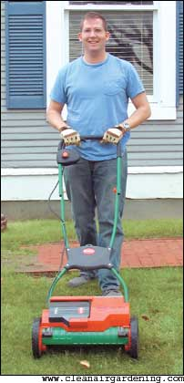

Lawn Mowers: Cordless And Electric Lawn Mowing Machines
These batter-powered cordless and electric lawn mowers are clean, quiet and easy to maintain and will save gas.
By Scott Hollis
April/May 2005
Now that spring is here, it’s time to drag out the lawn mower for another season. If you’re tired of that noisy and smelly gas-powered mower, then maybe it’s time you discovered cordless, electric, battery-powered lawn mowers. Clean, quiet and easy to start, they require no gas, oil changes or spark plugs. The battery takes the extension cord out of the lawn mower equation, and starting is gentler on your back than yanking a starter cord.
Cordless, battery-powered lawn mowers vary in sizes and performance. We tested three cordless electric lawn mower brands, each in a different size: Sunlawn’s Brill Accumower ASM380 reel mower, the Neuton mower (see Image Gallery) and Black & Decker’s CMM1000 (see Image Gallery). We were pleased with all three lawn mowers when used on small to medium-sized lawns in normal grass conditions. All three scored high marks for their quietness, nonpolluting operation and easy maintenance.
No Noise Lawn Mowers
Cordless, electric lawn mowers are much easier on your ears compared to their gas counterparts. The average electric mower makes no more noise than a washing machine (about 75 decibels), while a gas-powered lawn mower can make as much noise as a motorcycle (about 95 decibels).
Noise pollution is a real problem with gas mowers, as any late sleeper on a Saturday morning knows. But they can be more than a nuisance for those who use them. Loud noise can contribute to hearing loss when it exceeds 85 decibels, according to the National Institute for Occupational Safety and Health (NIOSH; www.cdc.gov/niosh). A gas-powered mower producing 95 decibels should be used no more than an hour a day, according to the Occupational Safety and Health Administration (OSHA; www.osha.gov). Switching to an electric mower will ease the stress on your ears and your neighbors.
Bag the Air pollution
Besides giving your eardrums a break, battery-powered mowers offer a compelling environmental benefit - they pollute much less than gas-powered mowers. Gas lawn mower manufacturers are designing more efficient engines to comply with the Environmental Protection Agency’s (EPA) new emission standards for lawn-and-garden equipment, but many lawn mowers predate these new standards. Even new gas mowers that meet the EPA standards still spew a higher percentage of VOCs (volatile organic compounds) into the air than automobiles. According to a 2003 EPA report, lawn-and-garden equipment accounts for 5 percent of all ozone-forming emissions. The same report concludes that one hour of lawn mower usage produces as much air pollution as driving a car 20 miles.
Emissions and spills from gas containers and tanks also contribute to soil and air pollution. According to the California Air Resources Board, portable gas containers account for about 87 tons per day of smog-forming reactive organic gasses in California alone, which are equal to the heat-trapping emissions from about 1 million cars. California already has standards governing the containers that release these emissions, but they remain unregulated at the federal level. Using an electric mower eliminates the use of any fuel container.
Electric mowers are much kinder to our air - they have no exhaust emissions and don’t require a gas can susceptible to evaporation and spillage. Generating the power to run electric equipment does produce pollution at the power plant. However, that process is more efficient than it is in small gas engines. Furthermore, power plants must meet federal and state pollution-control regulations.
Easy Maintenance
Electric mowers eliminate the cost of oil changes, spark plugs, air filters and tune-ups. In terms of energy cost, electric mowers use only about $5 worth of electricity each year - a significant savings when compared to the amount of money spent on fuel for a gas-powered mower. And beyond replacing the battery (which can be recycled) every five to seven years and occasionally cleaning and sharpening the blade, there’s little, if any, maintenance. The best thing you can do to keep your electric mower in fine form is to charge it according to the manufacturer’s instructions.
Brill Accumower ASM380
This 29-pound, electric, reel-type mower produced by Sunlawn sports 15½-inch-wide cutting blades and a string trimmer accessory. The blades provide a clean cut, and the optional grass catcher lets you collect the clippings. If you live in an urban area, have a small yard (under 3,000 square feet) and need something light, this mower is ideal. The Brill reel mower costs about $295 for the basic mower and battery, and $419 for the package deal, including the grass catcher and string trimmer.
Be sure you follow Sunlawn’s recommendations and cut the grass often (not more than about an inch at a time - reel mowers aren’t designed to mow taller grass or weeds). Cutting height settings range from about a half inch to about 1½ inches.
The 24-volt battery charges overnight, and switching the 3-pound battery between the mower and string trimmer accessory is a snap. The battery charge lasts for 20 to 40 minutes, depending on your lawn’s height and thickness, so if you want to use the mower and trimmer during the same charge, then you’ll have to work fast or have a small area to cut. The mower also can be used without the battery so you can finish your mowing even if the battery runs down.
The Brill comes with a two-year warranty, and when used for small jobs, this quiet, battery-powered reel lawn mower performs well.
Neuton mower
The 48-pound, cordless, rotary Neuton mower is powered with a 24-volt, 9-amp rechargeable battery that provides power for up to 60 minutes on a single charge, depending upon the length and thickness of your grass. The battery is removable, so you can take it inside and charge it overnight (using about 10 cents worth of electricity each charge) for a mow the following morning, or pop in a spare battery for extended mowing jobs. The Neuton costs about $350 for the basic mower; a mulch plate and additional blade, grass catcher, trimmer and extra battery are $140 more.
This mower has a quiet hum that is far more pleasing to the ears than the din of a conventional gas-powered machine. Bigger than the Brill but smaller than the Black & Decker, the Neuton has easily retractable handlebars and an almost seamless, hard, plastic shell.
It easily switches from a bagger to a mulch plate - just don’t allow your grass to grow too tall before using the mulching option or the Neuton may bog down. We thought the 14-inch mowing width was a little narrow, but it worked well overall if you don’t mind walking a few extra laps around the yard. Cutting height ranges from about 1½ to 3½ inches using one lever near the bottom of the mower.
The Neuton comes with an edger/trimmer attachment that connects to the front of the mower. We found it handy for detailing lawn edges, although it lacked the maneuverability of a traditional weed whip and seemed to deplete the battery more quickly than mowing alone.
The Neuton comes with a six-month free trial and a three-year warranty covering all parts, making it a great, low-maintenance option.
Black & Decker Model CMM1000
The Black & Decker battery-powered, rotary mower was the largest we tested, with a 19-inch cutting width. Its 76-pound weight definitely makes it harder to push around the yard than the other electric mowers we tested, but its sturdiness and power compare favorably to many gas-powered mowers. The Black & Decker costs about $420, which includes a rear grass catcher and a mulching plate.
Its 24-volt battery fully recharges in 16 hours. It is not removable, which means you can’t change out a spent battery for a fresh one. We found that a fully charged battery allowed for two separate mows of a small to medium-sized lawn (up to a third of an acre), but grass length will affect run time. While the mower slows a tad in long grass or thick, wet areas, the battery still provides plenty of punch when fully charged. Cutting performance slowly decreases as the battery loses its charge, but this is true for all battery-powered mowers.
The Black & Decker’s folding handle allows for storage in tight spaces, and the heavy-duty polymer deck is durable and easy to clean. Cutting height ranges from 1½ to 3½ inches with one-touch adjustment, although the mower we tested had a problem maintaining the selected height; the setting usually slipped after hitting a bump. Its two-year warranty covers all parts.
Overall, the Black & Decker mower handled the best among the three we tested for its power, stability and longer-lasting battery. This mower comes close to matching the performance of a gas-powered mower.
The Bottom Line
Cordless, battery-powered lawn mowers are quiet and work great for small to medium-sized lawns, require less maintenance and cause less airborne pollution than gas-powered mowers. Electric mowers still are at a disadvantage on larger lawns, however, because they are not self-propelled and can have trouble handling heavy or wet grass. Upfront cost is considerably more than a gas-powered mower, but cordless, battery-powered mowers should save you money over time, thanks to lower energy and maintenance costs.
Mow with the Power of the Sun
You’ll be the talk of the neighborhood if you use a solar-charged, battery-powered mower like the one shown in the Image Gallery (photo 3). Tom Lopez, owner of Free Power Systems in Longmont, Colo., says his solar-charged mower adds 15 to 20 minutes of run time per charge, in addition to full battery charging. He sells solar-charging Black & Decker mowers with a choice of photovoltaic (PV) panels that can be attached to the mower (see photo) or mounted on a garage roof. The roof extension kit makes it possible to recharge the lawn mower while storing it indoors.
“People who want to use the solar-recharging lawn mower in an urban area might want to choose the extension kit for theft protection,” Lopez says Bob Perkins of McGuckin Hardware in Boulder, Colo., sells Free Power System’s solar mower and reports, “I was a little skeptical at first, but after the mower ran out of its first charge, I went inside for a sandwich and drink, and after I came out again, the solar panels had already recharged the mower.”
If you already own a battery-powered lawn mower, home PV-conversion kits also are available so you can use PV panels for recharging. Several online sources sell the panels and components needed to make a working solar-charged conversion.
A solar-charged, battery-powered lawn mower can be the ultimate in maintenance-free, nonpolluting, cost-saving lawn care. The only drawback is the upfront cost.
Electric Mower Resources
Black & Decker CMM1000
Mulching Mower
Visit www.blackanddecker.com
for a list of distributors
Cordless Electric Brill Accumower ASM380 reel mower
People Powered Machines
(978) 884-8156
www.peoplepoweredmachines.com
Clean Air Gardening
(214) 370-0530
www.cleanairgardening.com
Neuton Cordless Electric Mower
(800) 687-6575
www.myneuton.com
PV accessories and mowers
Free Power Systems
Manufacturers and sellers of solar-powered lawn-and-garden equipment
(303) 651-3184
www.freepowersys.com
Solar Converts
Distributors of solar conversion kits for most battery applications
(519) 824-5272
www.solarconverters.com
 The Black & Decker CMM1000 (above left) and the Neuton mower (above right) both perfom well on small to medium-sized lawns in normal grass conditions. |
 Sunlawn's Brill Accumower uses are reel-type cutting blade. It can be used with or without battery power. |
 Free Power Systems owner Tom Lopez attached photovoltaic (PV) panels to his Black & Decker electric mower and gets an additional 15 to 20 minutes of use per charge. |